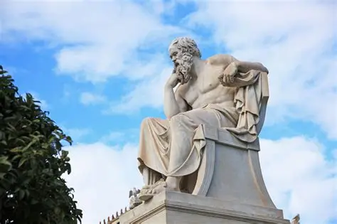

A filosofia é o estudo das grandes questões da existência humana. Por meio da razão e do pensamento crítico, buscamos compreender o mundo, a sociedade e nós mesmos. Desde a Grécia Antiga, grandes pensadores questionam a realidade e procuram respostas para questões fundamentais da humanidade.
O Mundo de Sofia conta a história de Sofia Amundsen, uma adolescente de 14 anos que começa a receber cartas misteriosas com perguntas como: "Quem é você?" e "De onde vem o mundo?". A partir dessas mensagens, Sofia passa a estudar filosofia com a ajuda de um professor chamado Alberto Knox. Durante sua jornada, ela conhece as ideias de grandes filósofos, como Sócrates, Platão, Aristóteles, Descartes e Kant. Ao longo da história, Sofia começa a questionar a existência humana, a realidade, o universo e o sentido da vida. O livro mistura uma narrativa de mistério com ensinamentos filosóficos, mostrando como a filosofia nos ajuda a pensar e compreender melhor o mundo ao nosso redor.